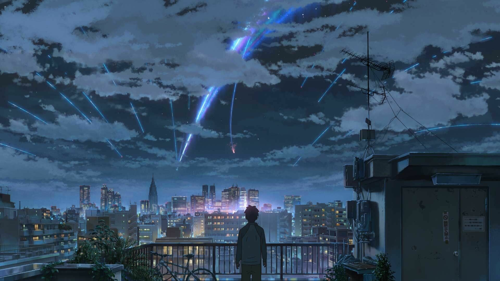
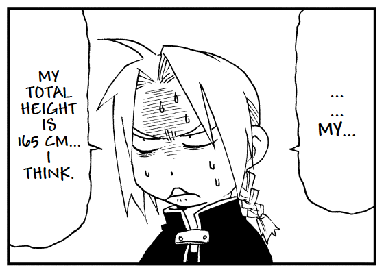
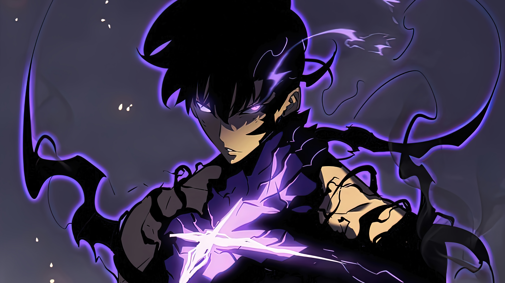

Anime
Posted on The Final Date
Anime refers to a style of animation that originated in Japan
and has since gained popularity worldwide. The term "anime" is derived
from the English word "animation," but in Japan, it encompasses all
animated works regardless of origin. Outside Japan, however, "anime"
typically refers to Japanese animated content.
- Characteristics of Anime:
-
Art Style: Anime is known for its distinct art style, which
often includes colorful visuals, exaggerated facial expressions,
large expressive eyes, and detailed backgrounds.
-
Genres: It spans a variety of genres, from action, romance,
and fantasy to science fiction, horror, and slice-of-life stories.
-
Formats: Anime can come in the form of TV series, movies, web
series, or OVAs (original video animations).
-
Target Audience: It caters to all age groups and
demographics, with categories like "shōnen" (for young boys),
"shōjo" (for young girls), "seinen (for adult men), and "josei" (for
adult women).
-
Global Popularity: With its rich storytelling and engaging
characters, anime has developed a massive global fanbase. Some
iconic examples include Naruto, Dragon Ball, Attack on Titan, My
Neighbor Totoro, and Your Name. It's not just entertainment—anime
often reflects cultural themes, societal issues, or deep
philosophical ideas, making it both entertaining and
thought-provoking.

Manga
Posted on The Final Date
Manga refers to a style of comic or graphic novel originating
in Japan. It is a hugely popular medium for storytelling and often
serves as the source material for many anime adaptations. The term
"manga" is used in Japan to describe all comics and graphic novels,
but outside Japan, it typically refers to Japanese comics.
- Characteristics of Manga:
-
Art Style: Manga features distinctive artwork, often with
expressive characters, detailed backgrounds, and creative panel
layouts. Black-and-white artwork is most common, though some manga
are published in color.
-
Reading Format: Traditionally, manga is read from right to
left and top to bottom, following the Japanese writing style.
-
Genres and Audience: Manga covers an extensive range of
genres, such as action, romance, comedy, fantasy, science fiction,
horror, and slice-of-life. It caters to various age groups and
demographics:
Shōnen: For young boys (e.g., One Piece, Naruto).
Shōjo: For young girls (e.g., Fruits Basket).
Seinen: For adult men (e.g., Berserk).
Josei: For adult women (e.g., Nana).
-
Manga's Global Influence: Manga has become a cultural
phenomenon worldwide, inspiring other mediums like anime, video
games, films, and even Western comic creators. Some popular manga
series (Attack on Titan, Demon Slayer) have massive followings and
have been translated into many languages. It’s a fantastic way to
dive into imaginative stories and explore a unique art form. Are you
interested in reading any specific manga or learning more about it?
Let me know!

Manhwa
Posted on The Final Date
Manhwa refers to South Korean comics or graphic novels. It is
similar to Japanese manga but has its own unique style and
storytelling traditions. Manhwa can cover a wide range of genres, from
action and romance to fantasy, horror, and slice-of-life. These works
are often read digitally and are usually presented in full color,
unlike many traditional manga, which are in black and white.
One interesting aspect is that manhwa is typically read
left-to-right, just like Western books, making it more accessible for
readers unfamiliar with the right-to-left format used in manga.
Webtoons, a popular format of manhwa, are designed to be read on
smartphones, featuring a vertical scrolling experience.
- Characteristics of Manhwa:
-
Art Style: Manhwa often features highly detailed and vibrant
artwork, with expressive characters and atmospheric settings.
Full-color illustrations are common, especially in webtoons.
-
Reading Format: Many manhwa, particularly webtoons, are
designed for digital platforms and are read by scrolling vertically.
This format enhances the reading experience on smartphones and
tablets.
-
Genres and Audience: Manhwa often explores romance, fantasy,
action, and coming-of-age themes. It's also known for tackling
mature and psychological topics with depth and sensitivity.
-
Manga's Global Influence: Manhwa often reflects South Korean
culture, including its societal norms, traditions, and modern-day
issues. This gives it a unique identity compared to manga or Western
comics.
-
Storytelling:Manhwa covers a broad range of genres and often
incorporates a mix of humor, drama, and intense emotion. Storylines
can be intricate and tend to emphasize character development and
relationships.
